Introduction to PyCBA#
PyCBA (Python Continuous Beam Analysis) is a general linear elastic one-dimensional beam analysis package.
This introduction demonstrates the basic use of PyCBA and results that can be obtained. So let’s get started…
[1]:
# Basic imports
import pycba as cba # The main package
import numpy as np # For arrays
import matplotlib.pyplot as plt # For plotting
from IPython import display # For images in this notebook
Example 1 - Basic Analysis#
Analyse a two span beam, with a UDL of 20 kN/m on each span
[2]:
display.Image("./images/intro_ex_1.png",width=800)
[2]:
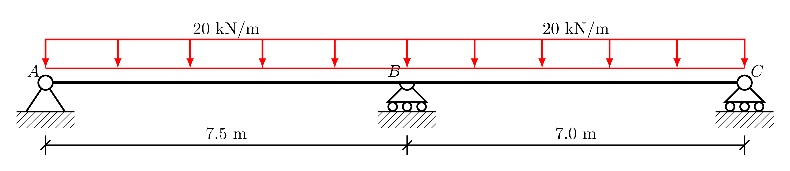
Here is the specification for PyCBA, explained below:
[3]:
L = [7.5, 7.0]
EI = 30 * 600e7 * 1e-6
R = [-1, 0, -1, 0, -1, 0]
Initially, we define the member lengths, which in this case coincides with the spans, \(AB\), and \(BC\).
The flexural rigidity (elastic modulus multiplied by the second moment of area) can be defined for each member, or if a scalar value is passed, this is assigned to all members. Here we take \(E = 30\) GPa and \(I = 600 \times 10^7\) mm\(^4\), and apply a conversion to put it into a consistent set of units (kN and m).
The beam restraints at each nodal degree of freedom are then defined. Since there are three nodes, this will be a vector of \(2 \times 3 = 6\) entries. Only the vertical (and not rotational) degree of freedom is restrained at nodes \(A\), \(B\), and \(C\), and so this is indicated using \(-1\) and \(0\) for unrestrained.
With the basic variables defined, we construct the beam_analysis object by passing these variables.
[4]:
beam_analysis = cba.BeamAnalysis(L, EI, R)
Next, we add the loads for each span to this object using the add_* utility functions:
[5]:
beam_analysis.add_udl(i_span=1,w=20)
beam_analysis.add_udl(i_span=2,w=20)
Before running the analysis it is worth visualising the beam — its supports and the applied loads — as a schematic. The underlying Beam object is available as beam_analysis.beam, which provides a plot() method (the matplotlib x-axis gives the distance along the beam):
[6]:
beam_analysis.beam.plot();
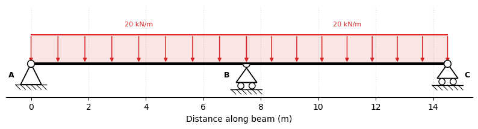
Now that we have applied the loads, it is ready for analysis and we call the analyze() function and plot the results:
[6]:
beam_analysis.analyze()
beam_analysis.plot_results()
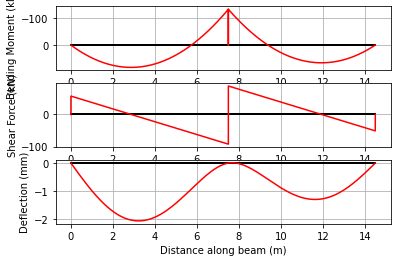
The numerical results can found from the beam_results member of beam_analysis object.
For example, the reactions corresponding to the fully-restrained nodes are:
[7]:
beam_analysis.beam_results.R
[7]:
array([ 57.41666667, 181.42261905, 51.16071429])
and the maximum bending moment along the second member, \(BC\), can be got from:
[8]:
beam_analysis.beam_results.vRes[1].M.max()
[8]:
np.float64(65.42525)
Since we have been consistent with our units, the reactions are in kN and the bending moment in kNm.
Example 2 - Load Definitions#
In this example, we consider a two-span beam with a fixed remote end, more load types, and a lower-level method for defining loads.
In addition to the utility functions for adding loads, a “load matrix” can be defined directly. This is a list of loads, where each load is defined by a list of five numbers, as defined in the docs:
Span No. | Load Type | Load Value | Distance a | Load Cover c
For UDLs covering the full length of the member, only the span number, load type, and value have non-zero entries.
[9]:
display.Image("./images/intro_ex_2.png",width=800)
[9]:
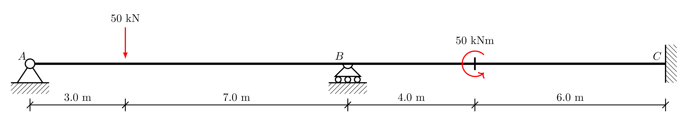
With two loads the load matrix (see pycba.load) is a list of two lists:
Span 1: point load is load type 2, with a value of \(50\) kN, at \(a = 3\) m
Span 2: moment load is load type 4, anti-clockwise positive \(50\) kNm, at \(a = 4\) m
Note, also that node \(C\) will have its two degrees of freedom restrained.
[10]:
L = [10.0, 10.0]
EI = 30 * 600e7 * 1e-6 # kNm2
R = [-1, 0, -1, 0, -1, -1]
LM = [[1, 2, 50, 3, 0], [2, 4, 50, 4, 0]]
Visualising this beam shows the point load and the applied moment, and the fixed far support at \(C\) (drawn as an encastré wall):
[12]:
cba.BeamAnalysis(L, EI, R, LM).beam.plot();
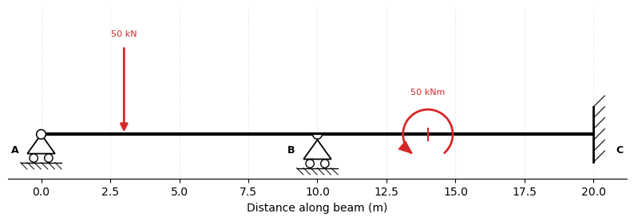
Along with L, EI, and R, the load matrix LM can be directly passed to the BeamAnalysis constructor resulting in an object ready for analysis. And to better evaluate the discontinuities for the moment and point loads, we can increase the number of evaluation points along each member to 500 when calling analyze() as follows:
[11]:
beam_analysis = cba.BeamAnalysis(L, EI, R, LM)
beam_analysis.analyze(500)
beam_analysis.plot_results()
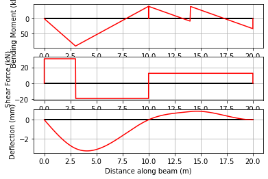
Example 3 - 3-span beam in a building subframe#
In this example we consider a reinforced concrete building subframe in which the columns are 4 m high, and 300 mm square. We take \(E=30\) GPa Hence the roational stiffness at each joint is \(2 \times (4EI)/L\) giving
We also take the beam as \(300\times600\) giving
So we can define the beam now as usual:
[12]:
L = [6,8,6]
E = 30
I = [54e8,54e8,54e8]
R = [-1,486e9,-1,486e9,-1,486e9,-1,486e9]
[13]:
beam_analysis = cba.BeamAnalysis(L, EI, R)
Next, we add the loads for each span:
[14]:
beam_analysis.add_udl(i_span=1,w=10)
beam_analysis.add_udl(i_span=2,w=20)
beam_analysis.add_udl(i_span=3,w=10)
The three-span subframe with its loaded spans:
[17]:
beam_analysis.beam.plot();
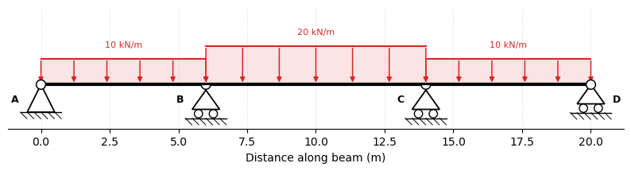
Now we can analyze and plot the results:
[15]:
beam_analysis.analyze()
beam_analysis.plot_results()
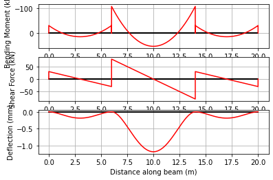
The influence of the column rotational stiffness at the joints is clear, and the moments in the columns canbe found as the difference in the moments at the ends of the connecting spans.
Example 4 - Post-tensioned 4-span beam#
In this example, we determine the load effects applied by a post-tensioned cable. We define the load matrix directly, based on the geometry of the cable drape.
[16]:
L = [6,8,6,8]
E = 30
I = [100e8,100e8,100e8,100e8]
R = [-1,0,-1,0,-1,0,-1,0,-1,0]
LM = [[1,4,50,0,0], # eccentricity at end
[1,3,20,0,1], # convex drape for 1 m
[1,3,-10,1,4], # concave drape for 4 m
[1,3,20,5,1], # convex drape for 1 m
[2,3,20,0,1.5], # convex drape for 1.5 m
[2,3,-10,1.5,5], # concave drape for 5 m
[2,3,20,6.5,1.5], # convex drape for 1.5 m
[3,3,20,0,1], # convex drape for 1 m
[3,3,-10,1,4], # concave drape for 4 m
[3,3,20,5,1], # convex drape for 1 m
[4,3,20,0,1.5], # convex drape for 1.5 m
[4,3,-10,1.5,5], # concave drape for 5 m
[4,3,20,6.5,1.5], # convex drape for 1.5 m
[4,4,-75,8,0]] # eccentricity at end
beam_analysis = cba.BeamAnalysis(L, EI, R, LM)
beam_analysis.analyze()
beam_analysis.plot_results()
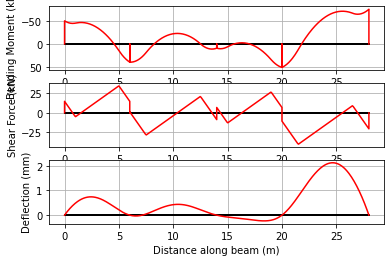
Example 5 - Superposition for load-balancing#
Using the add_LM subroutine load matrices may be superimposed. Based on Example 4, we will define the service loads and then the prestress equivalent loads are added. Both load cases are analysed seperately and the combined LM analysed: each set of results are displayed seperately.
Define the beam as before:
[17]:
L = [6,8,6,8]
E = 30
I = [100e8,100e8,100e8,100e8]
R = [-1,0,-1,0,-1,0,-1,0,-1,0]
beam_analysis = cba.BeamAnalysis(L, EI, R)
And now define the dead loads LMg, the live loads LMq, and the prestress loads as before LMp
[18]:
LMg = [[1,1,20,0,0], # 20 kN/m on each span
[2,1,20,0,0],
[3,1,20,0,0],
[4,1,20,0,0]]
LMq = [[1,1,30,0,0], # 30 kN/m on each span
[2,1,30,0,0],
[3,1,30,0,0],
[4,1,30,0,0]]
LMp = [[1,4,50,0,0], # eccentricity at end
[1,3,20,0,1], # convex drape for 1 m
[1,3,-10,1,4], # concave drape for 4 m
[1,3,20,5,1], # convex drape for 1 m
[2,3,20,0,1.5], # convex drape for 1.5 m
[2,3,-10,1.5,5], # concave drape for 5 m
[2,3,20,6.5,1.5], # convex drape for 1.5 m
[3,3,20,0,1], # convex drape for 1 m
[3,3,-10,1,4], # concave drape for 4 m
[3,3,20,5,1], # convex drape for 1 m
[4,3,20,0,1.5], # convex drape for 1.5 m
[4,3,-10,1.5,5], # concave drape for 5 m
[4,3,20,6.5,1.5], # convex drape for 1.5 m
[4,4,-75,8,0]] # eccentricity at end
The loadings at transfer are then obtained by superposition (add_LM), the superimposed loads are applied to the beam (set_loads), and analyzed:
[19]:
LMt = cba.add_LM(LMg,LMp)
beam_analysis.set_loads(LMt)
out_t = beam_analysis.analyze()
beam_analysis.plot_results()
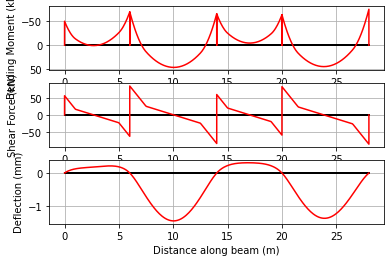
The service load effects are then calculated by further superposition of the live loads onto the transfer loads. We reset the loads in the beam_analysis object and re-analyze:
[20]:
LMs = cba.add_LM(LMt,LMq)
beam_analysis.set_loads(LMs)
out_s = beam_analysis.analyze()
beam_analysis.plot_results()
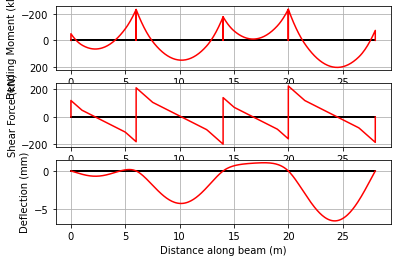
Example 6 - Prescribed Support Settlements#
Differential settlement between supports is a common problem in structural engineering; for example, due to uneven soil stiffness, consolidation under a pier, or adjacent excavation. PyCBA handles this through the optional D parameter of BeamAnalysis.
D is a list of the same length as R. Use None for DOFs with no prescribed displacement, and a float (positive upward, negative downward) for any DOF whose displacement is known. Fixed supports (R = -1) default to zero displacement unless overridden by D.
We revisit the two-span beam from Example 1, but now the intermediate support \(B\) settles by \(\delta_B = 20\) mm and the far support \(C\) settles by \(\delta_C = 10\) mm.
[21]:
L = [7.5, 7.0]
EI = 30 * 600e7 * 1e-6 # kNm^2
R = [-1, 0, -1, 0, -1, 0]
LM = [[1, 1, 20, 0, 0], [2, 1, 20, 0, 0]]
# Reference analysis – no settlement
ba_ref = cba.BeamAnalysis(L, EI, R, LM)
ba_ref.analyze()
print("Reactions (no settlement): ", ba_ref.beam_results.R.round(3), "kN")
# Analysis with prescribed differential settlements
delta_B = -0.020 # 20 mm downward at support B (DOF 2)
delta_C = -0.010 # 10 mm downward at support C (DOF 4)
D = [None, None, delta_B, None, delta_C, None]
ba = cba.BeamAnalysis(L, EI, R, LM, D=D)
ba.analyze()
print("Reactions (with differential settle):", ba.beam_results.R.round(3), "kN")
Reactions (no settlement): [ 57.417 181.423 51.161] kN
Reactions (with differential settle): [ 77.752 139.3 72.948] kN
The settlement redistributes bending moments across the spans. Plotting both cases makes the effect clear:
[22]:
res_ref = ba_ref.beam_results.results
res = ba.beam_results.results
fig, axs = plt.subplots(2, 1, figsize=(10, 6), sharex=True)
ax = axs[0]
ax.plot([0, sum(L)], [0, 0], "k", lw=2)
ax.plot(res_ref.x, res_ref.M, 'r', label="No settlement")
ax.plot(res.x, res.M, "r--", label=f"δ_B = {delta_B*1e3:.0f} mm, δ_C = {delta_C*1e3:.0f} mm")
ax.invert_yaxis()
ax.set_ylabel("Bending Moment (kNm)")
ax.legend()
ax.grid()
ax = axs[1]
ax.plot(res_ref.x, res_ref.D * 1e3, 'r', label="No settlement")
ax.plot(res.x, res.D * 1e3, "r--", label="With differential settlement")
ax.set_ylabel("Deflection (mm)")
ax.set_xlabel("Distance along beam (m)")
ax.grid()
plt.tight_layout()
plt.show()
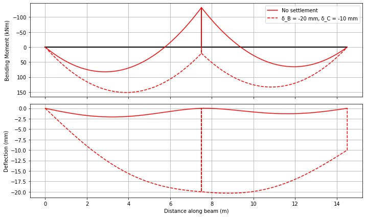
Example 7 - Spring Support Reactions#
When spring supports are used instead of rigid supports (positive value in R instead of -1), running the analysis also populates beam_results.Rs — a vector of spring forces \(k_s \cdot u_i\) for each spring DOF, in the same order they appear in R. This lets you post-process foundation loads directly without back-calculating them from the nodal displacements.
We use Example 1 to illustrate.
[23]:
L = [7.5, 7.0]
EI = 30 * 600e7 * 1e-6 # kNm^2
R = [-1, 0, 5e4, 0, -1, 0]
LM = [[1, 1, 20, 0, 0], [2, 1, 20, 0, 0]]
# Reference analysis – no settlement
ba = cba.BeamAnalysis(L, EI, R, LM)
ba.analyze()
ba.plot_results()

[24]:
print(f"Reactions at A and C are: {ba.beam_results.R.round(3)} kN")
print(f"Reaction at B is: {ba.beam_results.Rs.round(3)} kN")
Reactions at A and C are: [62.125 56.206] kN
Reaction at B is: [171.669] kN